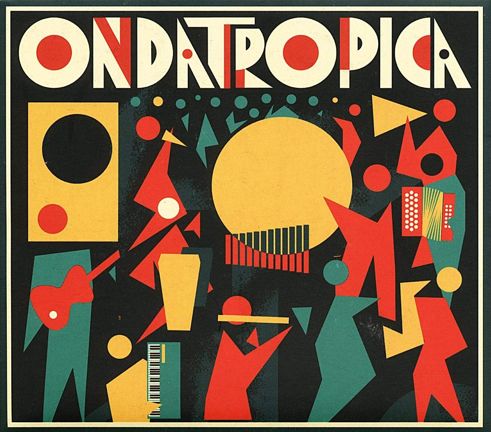
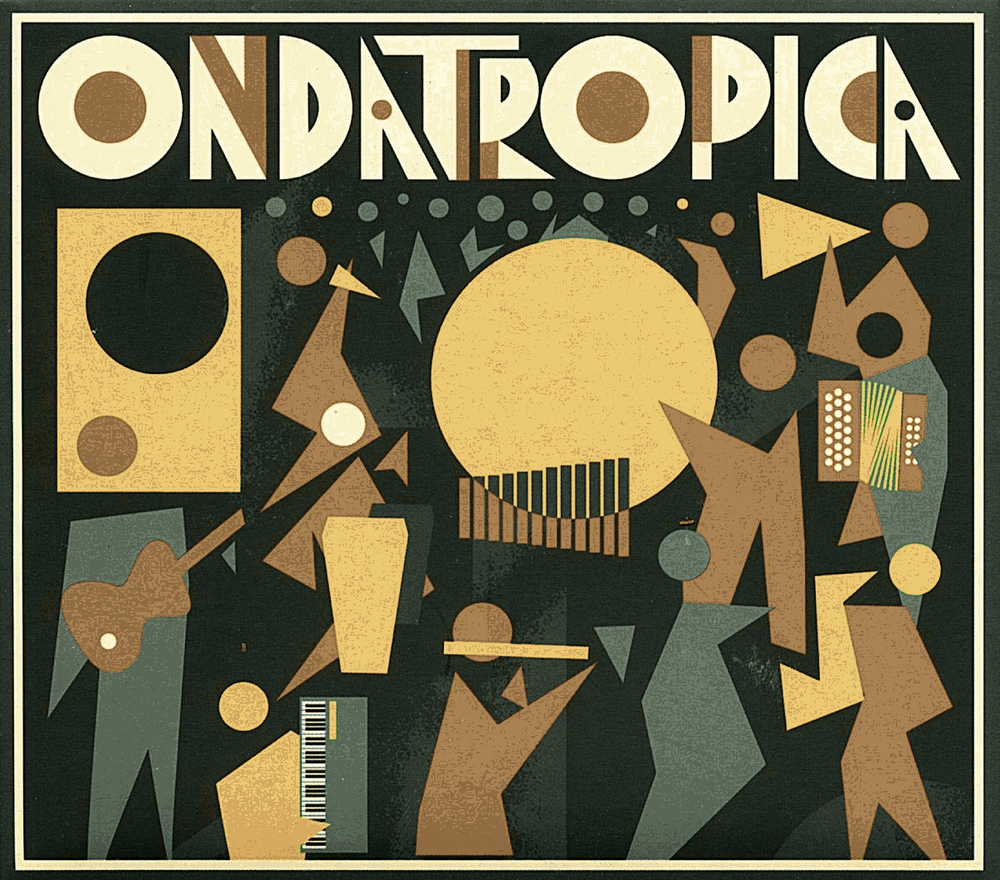

Easily extract and transfer color palettes to images online!

+
=

ColorConverter.ai is a free website that allows users to extract the most prominent colors from an uploaded image
The extracted colors can either be downloaded as a color palette with hex codes, or transfered to another image
Everything runs entirely in your browser — your images never leave your device